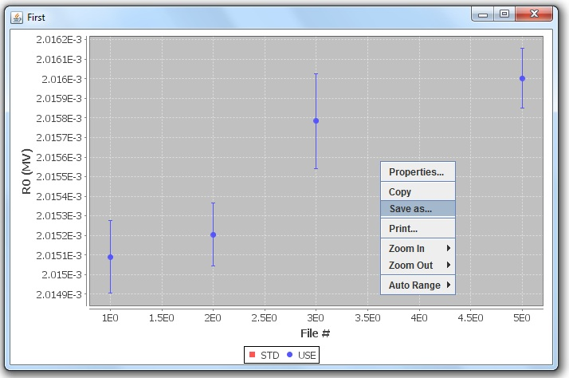
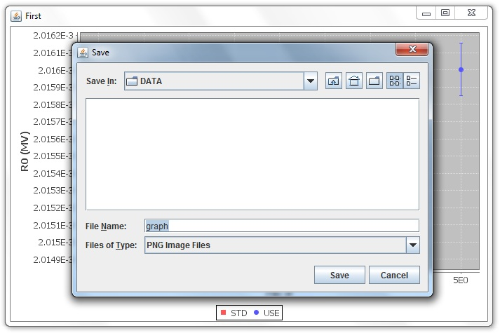

Step 1
To export the graph as a PNG (Portable Network Graphics) file, right click
on the graph and select "Save as..."
Tip: You may also use the "Copy" function to copy the graph. This will
enable pasting the graph directly into a word processor or spreadsheet
document.

Step 2
Enter a filename and hit the
Enter key or press "Save".

Return to menu